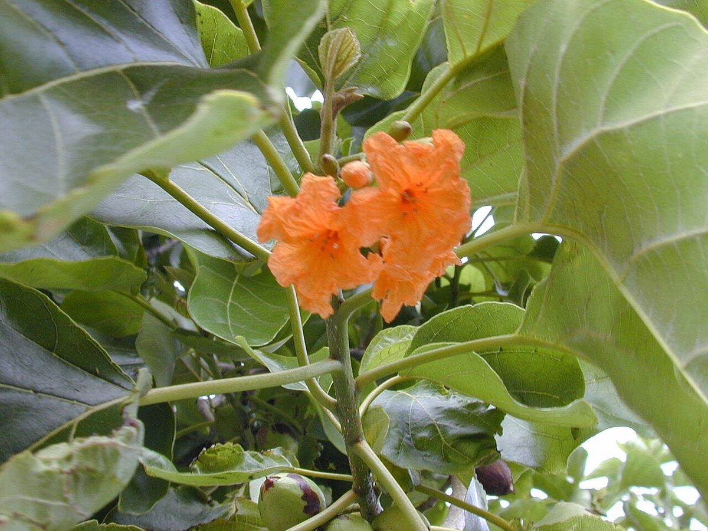
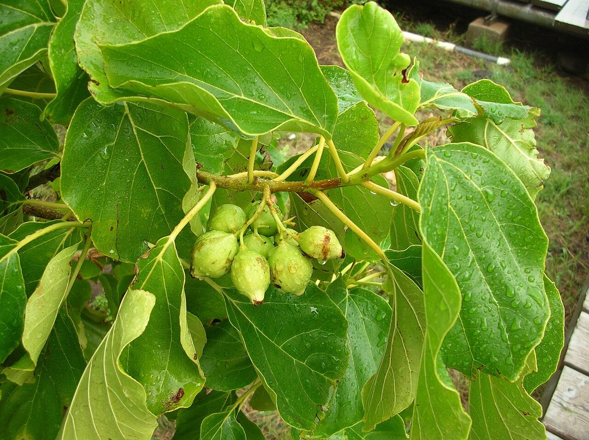

NOTABLE Beach strand Valley mouth
Cordia subcordata
kou · sea trumpet, kerosene wood



Quick facts
| Family | Boraginaceae |
|---|---|
| Scientific name | Cordia subcordata |
| Hawaiian name(s) | kou |
| English name(s) | sea trumpet, kerosene wood |
| Status | Indigenous (native, non-endemic) |
| Conservation | — |
| Coastal zones | Beach strand Valley mouth |
| Occurrence | Historically abundant in Hawaiian lowland coastal forest and still scattered along the unpopulated coast — usually as small groves near back-beach flats or in restored valley-mouth plantings. |
How to identify
- Growth form
- Small evergreen tree, 4–10 m tall, with a rounded spreading crown and a short trunk that frequently branches low.
- Size
- 4–10 m tall, canopy 4–7 m across.
- Leaves
- Broadly ovate to sub-cordate, 8–20 cm long, dull dark green with a slightly rough (sandpapery) upper surface and prominent venation.
- Flowers
- Vivid orange, trumpet-shaped, 3–5 cm across, with a crinkled (crepe-paper) texture and 5–7 spreading lobes. Borne in showy terminal clusters and dropping intact — a scattering of bright orange trumpets beneath the tree is diagnostic.
- Fruit / seed
- Hard, corky, rounded green-to-brown drupe about 2–3 cm across, partially enclosed in a persistent cup-shaped calyx; buoyant and ocean-dispersed.
- Bark / stem
- Grey-brown, becoming fissured on older trunks.
- Where it sits on the coast
- Back-beach and valley-mouth flats; tolerates salt spray but not heavy prolonged inundation.
Clinchers (features that lock the ID)
- Bright orange trumpet flower in a showy cluster — the standout ID feature.
- Fallen orange flowers ring the ground beneath the tree.
- Broadly ovate, sandpapery-textured leaves.
- Hard corky rounded fruit in a persistent green cup.
Look-alikes
- Thespesia populnea (milo) — Similar coastal habit, but milo has yellow (not orange) flowers with a maroon centre and a flattened woody capsule for fruit.
- Cordia sebestena (Geiger tree, ornamental) — Non-native; larger leaves, larger orange flowers with broader lobes, white fleshy (not corky) fruit; typically only in cultivated settings.
Ecology
A pantropical coastal tree with buoyant seed dispersal; kou stands were once a dominant lowland coastal forest type but have been much reduced by clearing and by the kou leafworm. Provides nesting and shade habitat. [1], [2], [3], [9], [10]
Cultural significance
Kou is prized in Hawaiian carving for its close-grained wood and historically ranked among the most respected timber woods. This guide names that relationship without instructing on harvest or working practice.